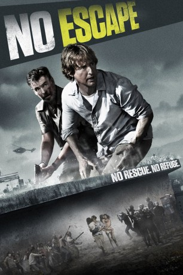

#3169 No Escape
 gesehen am 04.04.2016
gesehen am 04.04.2016
 
 IMDB-Wertung: 6.8 / 10
IMDB-Wertung: 6.8 / 10  Metascore: 38
Metascore: 38 
Der Amerikaner Jack Dwyer ist mit seiner Frau und den beiden Töchtern nach Südostasien gezogen, um dort ein neues Leben zu beginnen. Doch kaum dort angekommen, finden sie sich in einem brutalen Aufstand wieder. In den Straßen gibt es die ersten Toten. Als die Familie in ihrem neuen Zuhause angegriffen wird, versucht sie sich mit Hilfe eines Mannes namens Hammond in die US-Botschaft durchzuschlagen. Ein lebensgefährliches Unterfangen, sind die Putschisten doch auf Ausländer sehr schlecht zu sprechen.
Jahr: 2015
Dauer: 103 Minuten
FSK:
Land: USA Studio: Weinstein Company, TheTonspuren: DTS - ,
Untertitel: Deutsch,
Auflösung: 1080p (1920x1040) Größe: 6727 MB
Genre: Action, Thriller
Regisseur: John Erick Dowdle
Drehbuch: John Erick Dowdle, Drew Dowdle
Soundtrack: Marco Beltrami, Buck Sanders
Darsteller:
 Owen Wilson als Jack Dwyer
Owen Wilson als Jack Dwyer Lake Bell als Annie Dwyer
Lake Bell als Annie Dwyer Sterling Jerins als Lucy Dwyer
Sterling Jerins als Lucy Dwyer Pierce Brosnan als Hammond
Pierce Brosnan als Hammond Sahajak Boonthanakit als Kenny Rogers
Sahajak Boonthanakit als Kenny Rogers- Stacy Chbosky als Mother / Woman Next Door
 Byron Gibson als Hotel Guest #1
Byron Gibson als Hotel Guest #1 Spencer Garrett als Recruiter
Spencer Garrett als Recruiter- Pim Bubear als Tourist , uncredited
 Jim Lau als Prime Minister , uncredited
Jim Lau als Prime Minister , uncredited- Ego Mikitas als Tourist , uncredited
- Mia Sun als Voice Actor , uncredited
- Dollar Tan als Voice Actor , uncredited
 Bonnie Zellerbach als Sandra , uncredited
Bonnie Zellerbach als Sandra , uncredited- Claire Geare als Beeze Dwyer
- Thanawut Ketsaro als Samnang
- Chatchawai Kamonsakpitak als Prak
- Tanapol Chuksrida als Krit
- Nophand Boonyai als Concierge
- Kanarpat Phintiang als Bellhop
- Jon Goldney als Jerry
- Duang Maidork als Old Man
- Suphornnaphat Jenselius als Travel Agent
- Barthélemy Son als François
- Mikayla Friend als Daughter
- Matthew Timothy Olynyk als Hotel Guest #2
- Stefen King als Hotel Guest #3
- Thanawat Kaewarkorn als Taxi Driver
- Bonnie Jo Hutchison als Sandra
- Jay John Strifler als Terrified American Man
- Vuthichard Photphurin als Prime Minister
- Manfred Ilg als Cardiff Executive
- Paitoon Songubon als Young Rebel
- Yutthana Mueanwacha als Thief
- Somchai Santitharangkun als Kosal
- Danai Thiengdham als Boatman
- Hiran Bunyaain als Rebel
- Charlie Sungkawess als Late Night Reveler
- Hiroyuki Kobayashi als Japanese Businessman
- Somwang Ritdech als Grounds Keeper
- Zoe Addams als Hotel Guest , uncredited
- Jimmy Chhiu als Voice actor , uncredited
- Sam B. Lorn als Voice actor , uncredited
- Melissa Pompeo als Hotel Guest , uncredited
- David Prak als Khmer , uncredited
Datei: X:\2015(N-Z)\No Escape (2015, FSK, 1920x1040).mkv seit 08.02.2016
Festplatte: HD 2015(A-Z)
 Es gibt insgesamt 161 Filme in der Gruppe '2015(N-Z)'
Es gibt insgesamt 161 Filme in der Gruppe '2015(N-Z)'